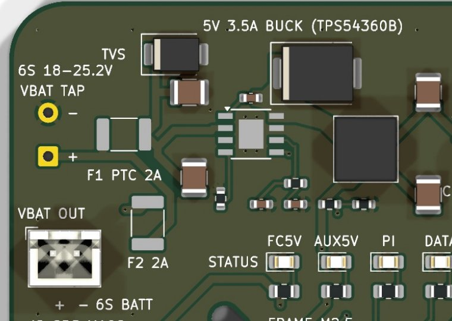
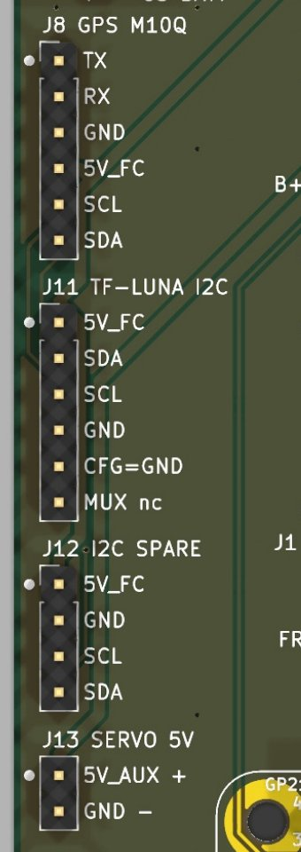
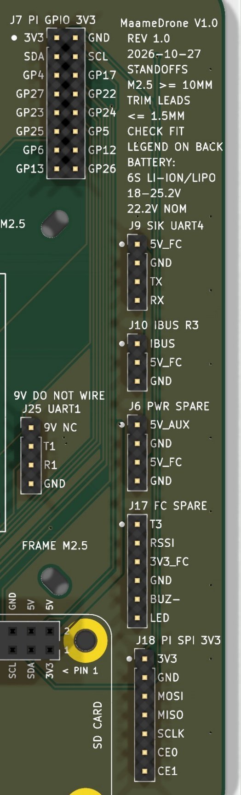
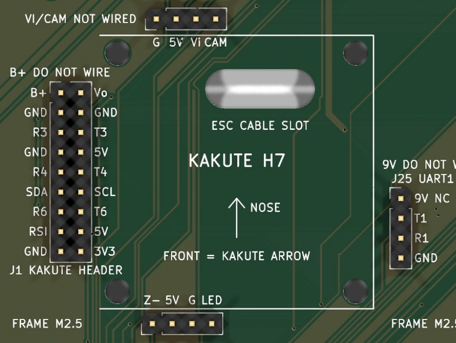
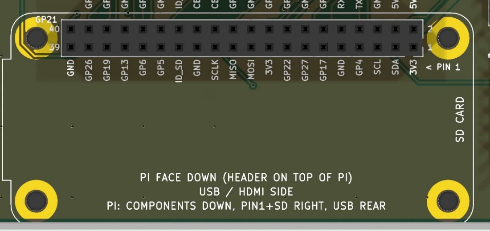

Connectors and pinouts¶
Every header is 2.54 mm pitch. Pin 1 is the square pad, and every pin is named on the silkscreen. On the upright 1-row headers along the left and right edges, pin 1 is the end nearest the nose. "TX" and "RX" in each table are from the peripheral's side, so the device's TX always lands on an FC RX.
Summary¶
| Ref | Silkscreen | Where | Pins | Connects to |
|---|---|---|---|---|
| J3 | VBAT TAP | Left edge, front | 2 solder pads | Battery voltage from the ESC's battery pads (18 AWG) |
| J20 | VBAT OUT | Left edge, front | JST-XH 2 | Fused 6S output, 2 A |
| J8 | GPS M10Q | Left edge | 1x6 | GPS on FC UART6 + FC I2C |
| J11 | TF-LUNA I2C | Left edge | 1x6 | TF-Luna lidar on FC I2C |
| J12 | I2C SPARE | Left edge | 1x4 | Spare FC I2C device |
| J13 | SERVO 5V | Left edge, rear | 1x2 | Payload servo power (5V_AUX) |
| J7 | PI GPIO 3V3 | Right edge, front | 2x8 | Pi I2C1 + 12 spare GPIOs |
| J9 | SIK UART4 | Right edge | 1x4 | Telemetry radio on FC UART4 |
| J10 | IBUS R3 | Right edge | 1x3 | RC receiver on FC R3 |
| J6 | PWR SPARE | Right edge | 1x4 | Spare 5V_AUX and 5V_FC |
| J17 | FC SPARE | Right edge | 1x6 | Kakute T3, RSSI, 3V3, buzzer, LED |
| J18 | PI SPI 3V3 | Right edge, rear | 1x7 | Pi SPI0 |
| J1 | KAKUTE HEADER | Left of the Kakute | 2x9 | Kakute left pad strip (harness) |
| J23 | (Kakute top) | Front of the Kakute | 1x4 | Kakute top pads (harness) |
| J24 | (Kakute bottom) | Rear of the Kakute | 1x4 | Kakute bottom pads (harness) |
| J25 | UART1 | Right of the Kakute | 1x4 | Kakute 6-pin JST: UART1 (harness) |
| U1 | PIN 1 | Rear | 2x20 socket | Raspberry Pi Zero, face down |
Power connectors¶

J3 VBAT TAP¶
Two solder-wire pads, marked "6S 18-25.2V". Run 18 AWG silicone wire from the ESC's battery pads. Pin 1 (+) is VBAT, pin 2 (−) is GND. Worst-case draw is about 3.1 A: 1.1 A into the buck at full 5 V load from a flat pack, plus 2 A on J20.
J20 VBAT OUT¶
JST-XH 2-pin, vertical. Pin 1 = OUT+ (battery through F2, 2 A hold), pin 2 = OUT− (GND). Use it for an accessory that wants raw battery voltage, and check the accessory accepts 25.2 V.
J6 PWR SPARE¶
| Pin | Net | Notes |
|---|---|---|
| 1 | 5V_AUX | Board buck, shared with the Pi and servo |
| 2 | GND | |
| 3 | 5V_FC | Kakute's 5 V; keep loads small (current limit unconfirmed) |
| 4 | GND |
J13 SERVO 5V¶
| Pin | Net |
|---|---|
| 1 (+) | 5V_AUX |
| 2 (−) | GND |
J13 carries servo power only. The servo's signal wire goes to M5 on the Kakute's 8-pin ESC port 2 plug (port 2 = B+, R7, GND, NC, M5, M6, M7, M8), not to the carrier. Set SERVO5_FUNCTION to 28 (Gripper).
Peripheral headers¶

J8 GPS (TBS M10Q)¶
The order matches the M10Q's own pad labels.
| Pin | Silk | Net | Kakute pad |
|---|---|---|---|
| 1 | TX | UART6_FC_RX | R6 |
| 2 | RX | UART6_FC_TX | T6 |
| 3 | GND | GND | GND |
| 4 | 5V_FC | 5V_FC | 5V |
| 5 | SCL | I2C_SCL | SCL |
| 6 | SDA | I2C_SDA | SDA |
J11 TF-Luna (I2C mode)¶
Pins 1–6 follow the TF-Luna's own pin order. CFG is tied to GND on the board, which puts the TF-Luna in I2C mode (address 0x10).
| Pin | Silk | Net |
|---|---|---|
| 1 | 5V_FC | 5V_FC |
| 2 | SDA | I2C_SDA |
| 3 | SCL | I2C_SCL |
| 4 | GND | GND |
| 5 | CFG=GND | GND |
| 6 | MUX nc | Not connected |
J12 I2C SPARE¶
Pin 1 5V_FC, pin 2 GND, pin 3 SCL, pin 4 SDA. Same FC I2C bus as the GPS compass, TF-Luna and the Kakute's baro, so a new device must not use an address already on the bus.

J9 SiK radio (UART4)¶
| Pin | Silk | Net | Kakute pad |
|---|---|---|---|
| 1 | 5V_FC | 5V_FC | 5V |
| 2 | GND | GND | GND |
| 3 | TX | UART4_FC_RX | R4 |
| 4 | RX | UART4_FC_TX | T4 |
J10 RC receiver (iBUS)¶
A standard servo-lead order, S + −.
| Pin | Silk | Net | Kakute pad |
|---|---|---|---|
| 1 | IBUS | RC_IBUS | R3 |
| 2 | 5V_FC | 5V_FC | 5V |
| 3 | GND | GND | GND |
J17 FC SPARE¶
Kakute signals not used yet.
| Pin | Silk | Net | Kakute pad |
|---|---|---|---|
| 1 | T3 | UART3_TX_SPARE | T3 |
| 2 | RSSI | RSSI_SPARE | Rsi |
| 3 | 3V3_FC | 3V3_FC | 3V3 |
| 4 | GND | GND | GND |
| 5 | BUZ- | BUZZER_SPARE | Z− |
| 6 | LED | LED_SPARE | LED (addressable LED data) |
BUZ− is the Kakute's switched buzzer return: a buzzer goes between a 5 V pin and BUZ−.
Pi expansion headers (3.3 V logic only)¶
Warning
These pins go straight to the Pi's GPIO, which is not 5 V tolerant. Never put 5 V on a signal pin here.
J7 PI GPIO¶
Odd pins in the left column, even pins in the right.
| Pin | Signal | Pin | Signal |
|---|---|---|---|
| 1 | 3V3 (Pi) | 2 | GND |
| 3 | SDA1 (GPIO2) | 4 | SCL1 (GPIO3) |
| 5 | GPIO4 | 6 | GPIO17 |
| 7 | GPIO27 | 8 | GPIO22 |
| 9 | GPIO23 | 10 | GPIO24 |
| 11 | GPIO25 | 12 | GPIO5 |
| 13 | GPIO6 | 14 | GPIO12 |
| 15 | GPIO13 | 16 | GPIO26 |
The Pi's I2C1 on J7 is a separate bus from the FC's I2C. It is not connected to the GPS or the TF-Luna.
J18 PI SPI0¶
| Pin | Signal |
|---|---|
| 1 | 3V3 (Pi) |
| 2 | GND |
| 3 | MOSI (GPIO10) |
| 4 | MISO (GPIO9) |
| 5 | SCLK (GPIO11) |
| 6 | CE0 (GPIO8) |
| 7 | CE1 (GPIO7) |
Kakute harness headers¶
The Kakute's pads are flat solder pads, so it joins the board by a short harness: 26–28 AWG silicone wire soldered to the pads, crimped into 2.54 mm Dupont housings at the other end. Each header copies the Kakute's pad layout one to one, so each wire runs straight across. Leave the wires slack so the Kakute stays soft-mounted.

J1 (2x9): Kakute left pad strip¶
Odd pins = the Kakute's outer column, even pins = the inner column.
| Pin | Kakute pad | Board net | Pin | Kakute pad | Board net |
|---|---|---|---|---|---|
| 1 | B+ | Do not wire | 2 | Vo | Do not wire |
| 3 | GND | GND | 4 | GND | GND |
| 5 | R3 | RC_IBUS (J10) | 6 | T3 | UART3_TX_SPARE (J17) |
| 7 | GND | GND | 8 | 5V | 5V_FC |
| 9 | R4 | UART4_FC_RX (J9) | 10 | T4 | UART4_FC_TX (J9) |
| 11 | SDA | I2C_SDA | 12 | SCL | I2C_SCL |
| 13 | R6 | UART6_FC_RX (J8) | 14 | T6 | UART6_FC_TX (J8) |
| 15 | Rsi | RSSI_SPARE (J17) | 16 | 5V | 5V_FC |
| 17 | GND | GND | 18 | 3V3 | 3V3_FC (J17) |
J23 (1x4): Kakute top-edge pads¶
| Pin | Kakute pad | Net |
|---|---|---|
| 1 | G | GND |
| 2 | 5V | 5V_FC |
| 3 | Vi | Do not wire |
| 4 | CAM | Do not wire |
J24 (1x4): Kakute bottom-edge pads¶
| Pin | Kakute pad | Net |
|---|---|---|
| 1 | Z− | BUZZER_SPARE (J17) |
| 2 | 5V | 5V_FC |
| 3 | G | GND |
| 4 | LED | LED_SPARE (J17) |
J25 (1x4): Kakute 6-pin JST (9V G T1 R1 G R6)¶
| Pin | Kakute pin | Net | Goes to |
|---|---|---|---|
| 1 | 9V | Do not wire | Nothing |
| 2 | T1 | UART1_FC_TX | Pi pin 10 (GPIO15 RXD) |
| 3 | R1 | UART1_FC_RX | Pi pin 8 (GPIO14 TXD) |
| 4 | G | GND | GND |
The JST's second G and R6 pins are left unconnected (R6 is already on J1).
U1 Pi Zero socket¶

A 2x20 female socket, 8.5 mm tall. The Pi plugs on face down: its header is on the component side, pins pointing at the carrier. Pin 1 (3V3, marked "< PIN 1") is at the right end, on the row nearer the rear edge. The SD card is on the right and the USB/HDMI edge is at the rear.
Danger
Fitting the Pi face up mirrors the pinout and puts 5 V on the wrong pins.
Pins the board uses (the rest are free, and most are on J7 and J18):
| Pi pin | Pi signal | Board net | Goes to |
|---|---|---|---|
| 1, 17 | 3V3 | 3V3_PI | J7.1, J18.1 |
| 2, 4 | 5V | 5V_AUX | Board buck (powers the Pi) |
| 6, 9, 14, 20, 25, 30, 34, 39 | GND | GND | |
| 8 | GPIO14 TXD | UART1_FC_RX | Kakute R1 via J25.3 |
| 10 | GPIO15 RXD | UART1_FC_TX | Kakute T1 via J25.2 |
| 12 | GPIO18 | LED_BATT_LO | D7 red, B-L |
| 35 | GPIO19 | LED_BATT_HI | D5 green, B-H |
| 36 | GPIO16 | LED_PI_ACTIVE | D3 green, PI |
| 38 | GPIO20 | LED_DATA | D4 yellow, DATA |
| 40 | GPIO21 | LED_BATT_MID | D6 yellow, B-M |
| 27, 28 | ID_SD, ID_SC | Not connected |
Status LEDs¶

Seven LEDs sit in a row behind the buck, labelled "STATUS". From left to right:
| Silk | Ref | Colour | Driven by | On means |
|---|---|---|---|---|
| FC5V | D2 | Green | 5V_FC via 1 k | Kakute 5 V present |
| AUX5V | D1 | Green | 5V_AUX via 1 k | Board buck running |
| PI | D3 | Green | Pi GPIO16 via 330 Ω | Companion script running |
| DATA | D4 | Yellow | Pi GPIO20 via 330 Ω | MAVLink traffic |
| B-H | D5 | Green | Pi GPIO19 via 330 Ω | Battery high |
| B-M | D6 | Yellow | Pi GPIO21 via 330 Ω | Battery mid |
| B-L | D7 | Red | Pi GPIO18 via 390 Ω | Battery low |